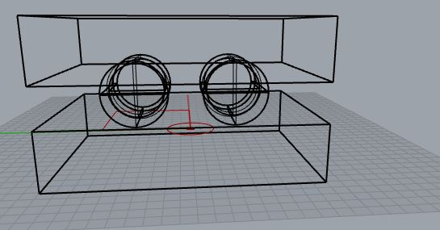
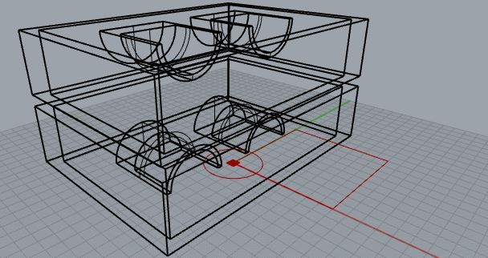
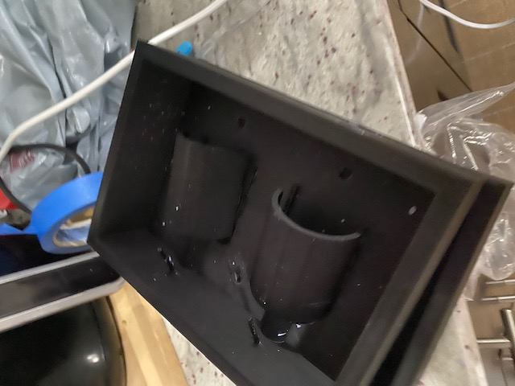
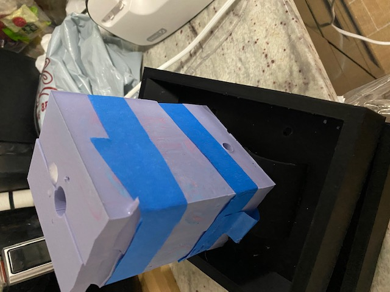

Assignment 6 had us Finish our molds
As you may recall, I decided to do a mold of a shot glass.
I ran into some interesting issues that I had to work around.
The first issue was not enough OOMOO, I underestimated the amount I would need for the mold
Because of this, I had only ennough OOMOO to finish one half of the mold. Lucky for me The mold had 2 halves of the shot glass, so I just cut the mold in half
Issue 2 once the mold had finished curing, I had trouble removing it because part of the mold was the interior of the shotglass which was a cave like feature in the mold.
Thus the mold tore, and I had to bind ti together with some glue.
Potentially this would work better as a 2 part mold, or I could try cutting the shot glass in the horizontal plane rather than the vertical plane. Inn that case the Shot glass should just be able to be pulled out
Another issue I saw was if the sides of the mold got wet it would not form a proper seal, resulting in the water i was forming with to escape.
For my final project, I noticed that I had alot of issues throughout the quarter figuring out the right tolerances for parts that fit or snap together.
In many cases, holes were too small, or the inserts too flimsy
For my final project I will be exploring Snap together ball joints.
Ball joints allow a flexibility of movement, but without the right tolerances, it would be difficult to move, or fall right out
This project will take some inspiration from the hoberman ball, and seek to create some sort of collapsable object from the ball joints.
Below are all the pics for assignment 6!


